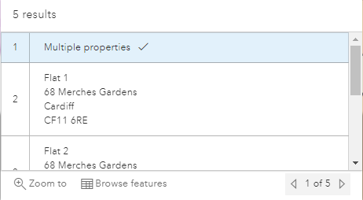

If you click on a single property centroid on the map an information box is displayed showing the details of the selected object e.g.

Along the top or bottom of the dialog (placement depends on where on the map you clicked) you may select to open the property record, add a child or children or select the ... Actions menu to display other actions (highlighted in red above).
If you click on a multiple property centroid then a different dialog is displayed e.g.

Here you have the choice to Zoom to the location on the map or Browse the features of the addresses. If you click Browse features the individual addresses are displayed:

Use the scroll bar to scroll up and down the list of properties or the arrows at the bottom left to display each of the property details in turn.